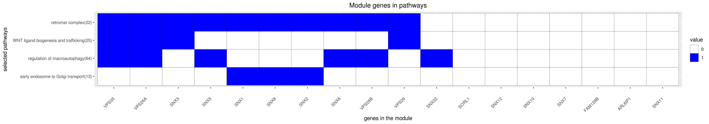

Back to main page
DREAM Module Identification Challenge – Consensus modules
PPI-STRING_Consensus_mod131
| Assigned name |
NA |
| Network |
PPI-STRING |
| Module ID |
PPI-STRING_Consensus_mod131 |
| Module size |
22 genes |
|
Module genes
This module comprises the following genes:
| Gene ID |
Gene Symbol |
Gene Name |
| 23204
|
ARL6IP1
|
ADP ribosylation factor like GTPase 6 interacting protein 1
|
| 127687
|
C1orf122
|
chromosome 1 open reading frame 122
|
| 64855
|
FAM129B
|
family with sequence similarity 129 member B
|
| 80148
|
PQLC1
|
PQ loop repeat containing 1
|
| 6642
|
SNX1
|
sorting nexin 1
|
| 29887
|
SNX10
|
sorting nexin 10
|
| 29916
|
SNX11
|
sorting nexin 11
|
| 29934
|
SNX12
|
sorting nexin 12
|
| 6643
|
SNX2
|
sorting nexin 2
|
| 8724
|
SNX3
|
sorting nexin 3
|
| 401548
|
SNX30
|
sorting nexin family member 30
|
| 254122
|
SNX32
|
sorting nexin 32
|
| 27131
|
SNX5
|
sorting nexin 5
|
| 58533
|
SNX6
|
sorting nexin 6
|
| 51375
|
SNX7
|
sorting nexin 7
|
| 29886
|
SNX8
|
sorting nexin 8
|
| 6653
|
SORL1
|
sortilin related receptor 1
|
| 9559
|
VPS26A
|
VPS26, retromer complex component A
|
| 112936
|
VPS26B
|
VPS26, retromer complex component B
|
| 51699
|
VPS29
|
VPS29, retromer complex component
|
| 55737
|
VPS35
|
VPS35, retromer complex component
|
| 92715
|
WDR85
|
diphthamide biosynthesis 7
|
|
Functional annotation
Modules were tested for enrichment in functional and pathway annotations using two complementary approaches:
1. To select a small number of specific / non-redundant annotations for each module, a regression-based approach was used;
2. To obtain the complete set of enriched annotations, an extension of Fisher’s exact test that takes annotation bias into account was employed (Wallenius’ non-central hypergeometric distribution).
Most specific annotations for this module
1Regression coefficient
2Fisher’s exact test nominal P-value
3Annotation source (Reactome, GO biological process (BP), molecular function (MF) and cellular component (CC))
4GO category or Reactome pathway
5High-level branch of annotation tree
Gene membership

All enriched annotations
Gene Ontology
11Nominal enrichment p-value (Wallenius’ noncentral hypergeometric distribution)
2FDR corrected p-value (Benjamini-Hochberg)
Reactome
| P-value1 |
FDR2 |
Term |
| 2.74e-04
|
3.78e-02
|
GOLGI ASSOCIATED VESICLE BIOGENESIS
|
| 3.44e-04
|
4.63e-02
|
TRANS GOLGI NETWORK VESICLE BUDDING
|
| 4.52e-04
|
4.95e-02
|
GOLGI ASSOCIATED VESICLE BIOGENESIS
|
| 6.00e-04
|
6.38e-02
|
TRANS GOLGI NETWORK VESICLE BUDDING
|
| 1.42e-03
|
1.37e-01
|
MEMBRANE TRAFFICKING
|
| 1.54e-03
|
1.71e-01
|
MEMBRANE TRAFFICKING
|
|
11Nominal enrichment p-value (Wallenius’ noncentral hypergeometric distribution)
2FDR corrected p-value (Benjamini-Hochberg)
Mouse mutant phenotypes
11Nominal enrichment p-value (Wallenius’ noncentral hypergeometric distribution)
2FDR corrected p-value (Benjamini-Hochberg)
Generated on: Thu Aug 30 17:26:11 2018 - R2HTML